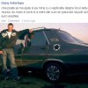

Primii bani
www.ddjobs.ro, platforma miracol inventată de Dan Diaconescu Jobs (fără Steve) la curtea partidului omonim a mutat poporul OTV pe Internet. Asta n-ar fi neapărat rău dacă afluxul de prieteni ai PP-DD s-ar revărsa şi spre vreun dicţionar online, enciclopedie sau almanah, înainte de a copia zămisli articole pe ddjobs. Adică spre niscaiva cărţi, dar fără dreptunghiul de hârtie folosit – pe vremuri – drept suport. Însă, în România poţi ajunge ministrul educaţiei chiar dacă te exprimi ca un curcan hămesit ameninţat cu tăierea. Aşa că mai nimeni nu mai crede că alfabetizarea e o condiţie a prezenţei în spaţiul public, fie el virtual ori real. Esenţială e iluzia îmbogăţirii facile, iar DD e maestrul absolut al halucinaţiilor consensuale.
DDjobs, banii, Google şi poporul de interlopi scriitori
Despre ce este şi cum (nu) merge treaba la ddjobs am scris în articolul “DDJOBS.RO, ţeapă sau şansă de câştig?”, analizând detaliat culoarea aţei cu care s-a ţesut oferta cu zecile de mii de locuri de muncă în Târgu Jiu şi-n toată ţara. Tot acolo am explicat şi cauza erorii de înregistrare “Adresa URL www.ddjobs.ro nu este disponibilă pentru înscrierea în programul AdSense“. Astăzi ne propunem să răspundem întrebărilor conceptuale precum:
- Câţi bani am câştigat la ddjobs pe minut, oră, zi, săptămână sau lună?
- Cum pot afla cât de bogat sunt de când lucrez pentru Google şi Domnu’ Dan Adsense? Curge profitul pe ddjobs în lumea lui .com?
- Cum se încasează banii de la ddjobs şi în cât timp fac primul milion de euro din publicitate pe Internet? Eu mă plictisesc repede, durează mult?
- Scriu “mi-au” ca pisica, îmi zice Interlopu’ pă Feisbuc, urăsc gaborii şi şcoala. Pot fi un spammer de succes în industria IT OTV?
- E plagiatul pe www.ddjobs.ro o ocupaţie bănoasă?
- Ce să aleg între un fular violet şi un job de la Dan Diaconescu?
- Vreau bani, parale, câştig, profit, bogăţie . Vrea să fiu plătit rapid, instant şi cash. Am venit unde trebuie?
- Cum ridic banii de la ddjobs? Ajunge o pungă de hârtie sau trebuie să cumpăr un sac de plastic?
Întrebarea “cum scriu un text corect, inteligent şi original?” n-a adresat-o nimeni.
Cum am câştigat 1000 de € la DDJOBS. Vezi dovada venitului
Doamnelor, domnişoarelor şi domnilor, chemaţi-vă rudele, prietenii şi vecinii. Dar mai ales duşmanii, căci e vorba despre bani. Pentru a-l scuti pe DD Preşedinte de efortul mediatizării altor arătări cu dovezi solide şi gazoase despre câştigurile înregistrate la www.ddjobs.ro prin Google AdSense, vă prezentăm noi proba. Iată câţi bani am făcut începând cu 1 decembrie 2012 din reclamele afişate pe site-ul menţionat. După cum vedeţi, e imaginea ecranului unui calculator conectat la contul AdSense, peste care am scris ©ACRU.ro, ca nu cumva performanţa noastră să apară la Televiziunea Poporului. Cum ar spune însuşi Dan Diaconescu: Ponta, uite banii de la ww.ddjobs!
1056 de EURO plus mărunţiş în doar două săptămâni, numai de la magnificul DD Jobs! Nu-i rău, nu? În ritmul ăsta, până la sfârşitul lunii decembrie trecem cu salariul de 2000 “iepuroi”, adică vreo 9000 de RON. Spre disperarea ciocoilor, anul are 12 luni, deci noi vom avea în contul Google ddjobs peste un miliard de lei vechi (108.000 RON) de Crăciun, în 2013.
Cifrele puteai fi mai mari. Care e secretul?
Dacă (şi numai dacă) acest articol va depăşi popularitatea scrierii despre nevoia tătucului protector (sunt nişte butoane tip contor cu Like, Share, +1 şi alte ghiduşii la sfârşitul fiecărui text, sub Etichete), vă vom spune cum am procedat astfel încât să putem prezenta dovada unor câştiguri atrăgătoare. Metoda nu e teribil de laborioasă, iar tinerii specialişti în online ai lui Dan Diaconescu ştiu asta de fiecare dată când apar la televizor.
În caz contrar, vom păstra reţeta succesului rapid doar pentru noi.


{kind=link}
{kind=link}
Pai zi jurnalistul lu’ peste, ori e o teapa a lui ddjobs, ori ai falsificat dovada, ori ai facut banii prin mijloace ilegale sau necinstite, ori e pe bune?
nu cred ca minte dl dan diaconescu sigur e adevarat,cum minte ponta,ziua spune un lucru iar seara nu mai e asa
unii critica pe dl dan diaconescu ca a facut bani inlegal dar sunt dusi cu pluta ca nu au urmarit emisiunile otv noi otvisti l-am ajutat pe dl dan sa aiva bani dar a muncit cinstit si noi savurat emisiunile dinsului ca exemplu;elodia,diana malos,cazul de la cerna voda,magda ciumac,crima din str primaveri,glume cu gabriel fatu si altele forta pp-dd
@sabo, ne spui şi nouă cum l-aţi ajutat pe Domnu’ Dan să facă bani? Concret, în afară de a trimite SMS la 1333, cum l-aţi finanţat?
pai cum sa-l fi ajutat pe DL Dan,simplu vizionind emisiunea Dan Diaconescu Direct e vizionata de peste un mil jumate de oameni reitingul nu ii aduce bani la Dl dan
@sabo, eşti sigur? Mai gândeşte-te cu cifrele de audienţă în faţă: http://www.paginademedia.ro/2013/01/audienta-otv-s-a-dus-la-vale-in-ultimul-an/
Simpla audienţă (rating-ul, dacă vrei) nu aduce bani. Te rugăm, spune-ne trei produse/servicii pe care le-ai cumpărat în urma vizionării unor reclame difuzate la OTV. Sau nu-ţi mai aminteşti ce rula în pauza publicitară?
da e adevarat ca in ultimul an OTV-ul nnu a mai avut audienta dar cine s-a obisnuit cu OTV-ul tot pe acest canal se uita,nu e adevarat^ trei produse ce am cumparat din cite imi aduc aminte vinul cu cod ce se extragea in fiecare seara lapte pt fetita apa minerala etc
@sabo, şi eu am cumpărat apă minerală! Am senzaţia că asta nu l-a ajutat prea tare pe DD să facă bani.
Cel care-si zice Acru. Mai inteligentule, Dan Diaconescu statea in fata camerelor cand tu sforaiai, si celilalti asemeni tie, cei cere nu mai au nevoie de bani, ptr ca au destui, fiindca au distrus totul in tara asta, au vandut si au furat, si-au umplut conturile, si acum fac acelasi lucru cu sprijinul celor ca tine, care nu-s deloc putini, s-a vazut clar la alegeri cati puturosi, inculti si naivi au votat USL la indemul Antenei3 sub pretextul ca daca vor vota USL Basescu nu va mai fi presedinte si va raspunde penal ptr flota etc. L-a vazut cineva pe Basescu simplu cetatean? NU! L-a vazut cineva pe Ponta Victor, sau pe Antonescu Crin ca a ridicat standardul de viata, ca a schimbat codul fiscal, sau ca a facutg orice altceva ptr ca cetatenilor din acesata tara sa ne mearga mai bine? L-a auzut cineva vreodata pe Iliescu Ion, care este in spatele lui Pona Victor, sa-l fi sfatuit sa schimbe ceva in tara asta, si sa nu mai promoveze furtu, nemunca, imoralitatea, distrugerea si vanzarea pe 1 leu a tot ceea ce avem? NU! Dan Diaconscu si Tudor Barbu sunt singurii care au vorbit si au expus in fata camerelor toata marsavia si hotia voastra…a celor de teapa lui “Acru”, care aplauda si incurajeaza toate astea si isi doresc ca tara noastra sa devina o colonie, iar noi niste simpli sclavi. Incepand de la Iliescu Ion, si pana la cel ce-si zice “Acru”, gandind, poate, ca e destept, toti acestia au distrus si au sustinut distrugerea acestei tari cu concursul Antenei3 si mai ales a milioanelor de puturosi, naivi si (sau) rau voitori care au votat USL. Oameni buni, daca dupa 23 de ani de domnie FSN-ista, vazand ceea ce au facut si in ce stare ne-au adus ati mai pus stampila tot pe FSN = USL + PDL (ARD) + PC + UDMR, scuze, dar aveti grave probleme cu capul. Asa ca: VA MERITATI SOARTA!!! IAR DIN CAUZA VOASTRA VOR SUFERII MULTE GENERATII DE-ACUM INCOLO! Sunteti mai vinovati decat orice criminal, ptr ca din cauza voastra oamenii se sinucid (din cauza traiului pe care ni-l ofera cei pe care iarasi i-ati votat). Sunteti mai vinovati decat orice hot condamnat, ptr ca ati furat, ati devalizat, ati consimtit cu votul vostru la asa ceva, si ati incurajat prin votul vostru acest lucru. Sunteti cu mult mai vinovati decat orice pedofil condamnat, ptr ca ati distrus viitorul copiilor, al nepotilor si-a stranepotilor nostri care vor ajunge analfabeti, cersetori, prostituate sau hoti ptr ca nu vor mai avea din ce si cum trai, ptr ca nu va mai exista nimic in tara noastra, iar pe deasupra vom, si vor fi si datori foaarte multe generatii de-acum inainte., de aceea va numesc PEDOFILI MORALI!
@Edward, cum de eşti atât de sigur că toţi cei care refuză ţepele date de Dan Diaconescu au votat cu Traian Băsescu sau/şi susţin USL?
Mai citeşte şi alte articole înainte să te înfigi cu dinţii proletari în gardul argumentaţiei. De exemplu, poţi începe cu: http://acru.ro/efectul-ponta/ . După ce-l citeşti, spune-ne de la cine crezi că am luat bani grămadă pentru a-l scrie.
Ba ma lasi?….teapa!
NU VREAU SA FIU SINGURUL CARE ESTE NEMULTUMIT DE FAOTUL CA ,,EUROPENII AU INCHIS DEMOCRATIA” .dormiti linistiti europeni s-a REINSTAURAT DICTATURA CARE BATE SI LA USA VOASTRA ,A APROBAT ACRU?
Doamne , mare este invidia ( în Românica ) !
,,COMENTEAZA ART.,,PLUTESTE FLOTA PRESEDINTELUI? in ce masura crezi ca este adevarat?
cea mai mare teapa.siteul este inchis.nu merge .Diaconescu.oltean care minte permanent.
s-a dus si siteul cu dd
Da-ne si noua reteta succesului. Facurai banii aia intr-un final de an?
@George (17), nu pot. Nu s-a îndeplinit condiţia pusă în finalul articolului.
Comments on this entry are closed.